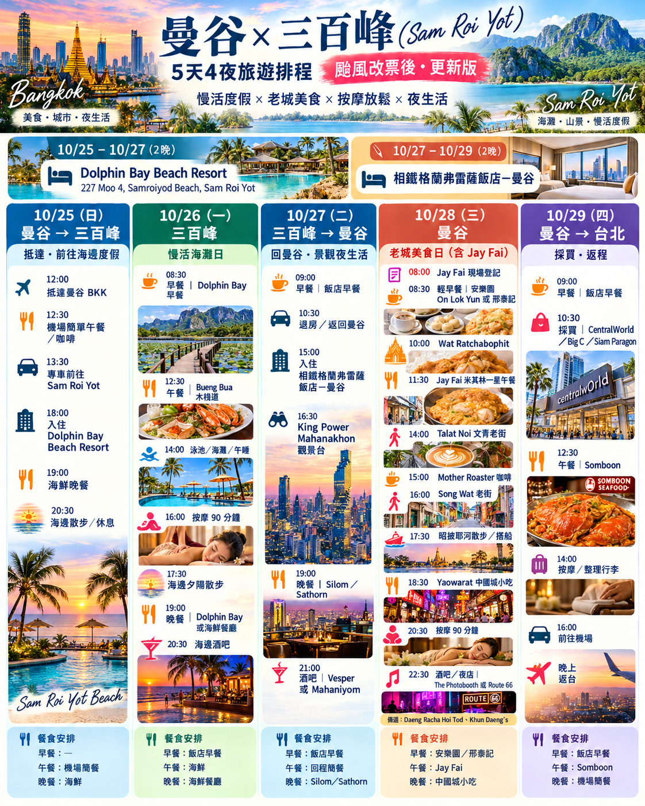

颱風改票｜行程已調整10/23–10/24 取消 · 改為 10/25–10/29查看詳情
依你最新提供的行程圖，10/23–10/24 行程取消，改為五天四夜。10/25 預計 12:00 抵達 BKK，13:30 專車前往 Sam Roi Yot。
10/23–10/25 的 CITICHIC 已不列入本次行程；此網站更新不代表已向飯店辦妥退訂或退款，請自行向飯店／訂房平台確認。
保留 Dolphin Bay 10/25–10/27、相鐵 10/27–10/29 兩段住宿；新圖中的航班、專車與 Jay Fai 時段均依規劃顯示，實際預訂狀態另行確認。
10/25 抵達 BKK專車前往三百峰
10/25–10/27 · 兩晚Dolphin Bay Beach Resort
10/27–10/29 · 兩晚相鐵 · 曼谷
四晚住宿與 Google Maps
10/25–10/27｜Dolphin Bay Beach Resort
227 Moo 4, Samroiyod Beach, Sam Roi Yot
📍 Dolphin Bay Google Maps
10/27–10/29｜相鐵格蘭弗雷薩飯店－曼谷
No. 7 Soi Sukhumvit 25, Bangkok
📍 相鐵飯店 Google Maps
CITICHIC 10/23–10/25 不再列入行程；取消訂房及退款請另向飯店／平台確認。10/29 先退房寄放行李，再依航班時間取行李前往機場。
更新版完整行程圖（點擊可收合）
